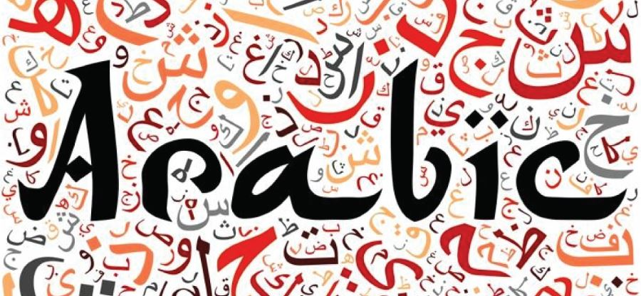

АРАБСКИЙ ЯЗЫК
- Поскольку современный литературный арабский язык продолжает развиваться, постепенно увеличивается число различий между ним и классическим арабским языком. При этом меняется не только лексика, но и грамматика.
- Бытует мнение, что арабский — один из самых богатых языков, содержащий огромное количество понятий, которые очень трудно переводить на другие языки. Нужно отметить, что арабы исторически неохотно заимствовали чужие слова, предпочитая создавать собственные. Благо, что словообразовательные возможности у этого языка действительно огромны. Впрочем, тут многое зависит от диалекта. Так, в египетском диалекте очень много заимствований из французского.
- Арабское письмо — это особая тема. Алфавит этого языка включает в себя 28 букв, которые позволяют не просто составлять слова, но создавать целые письменные рисунки и узоры. Что и говорить, арабская каллиграфия — это целая область декоративного искусства, о возникновении которого давно уже спорят учёные. Но пока всё остаётся лишь на уроне гипотез.
- Арабский язык считается одним из самых сложных для изучения. Этому способствует непривычное письмо, в котором бывает трудно отделять одни буквы от других, а также очень сложная грамматика. Одной только зубрёжкой дело не ограничивается, нужно кардинально изменить образ мышления и немало потрудиться над произношением.